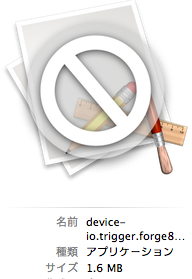

Trigger.io
概要
クロスプラットフォームなFW
http://trigger.io/
この記事みて興味持った。
http://trigger.io/cross-platform-application-development-blog/2012/02/24/why-trigger-io-doesnt-use-phonegap-5x-faster-native-bridge/
セットアップ
サインアップ/インが必要。え。
development environmentとやらをDLして解凍後、
解凍したdirで、
source go.sh
somewhere:forge-tools someone$ source go.sh
Welcome to the Forge development environment!
To get started, change to a fresh directory for your app, then run: forge create
RuntimeにPython2.x系が必要。macだと最初から入ってると思います。
解凍した時点でこんな感じ
アプリケーション作成
"To get started, change to a fresh directory for your app, then run: forge create"
っつーことなので、
mkdir ../testApp
cd ../testApp
で、
forge create
(forge-environment)somewhere:testApp someone$ forge create
[ INFO] Forge tools running at version 2.6.2_
[ INFO] Update result: you already have the latest tools
Enter app name: TestApp
Your email address: sassembla@hotmail.com
Password:
[ INFO] authenticating as "sassembla@hotmail.com"
[ INFO] authentication successful
[ INFO] Registering new app "TestApp" with trigger.io...
[ INFO] Fetching initial project template
[ INFO] App structure created. To proceed:
[ INFO] 1) Put your code in the "src" folder
[ INFO] 2) Run forge build to make a build
[ INFO] 3) Run forge run to test out your build
この時点で、testAppフォルダ内は、 
わーいなんか出来たー。

Build
forge build
[ INFO] Forge tools running at version 2.6.2
[ INFO] configuration has changed: creating new templates
[ INFO] Update result: you already have the latest tools
[ INFO] Starting new build
[ INFO] Build 2537 started...
[ INFO] This could take a while, but will only happen again if you modify config.json
[ INFO] build completed successfully
[ INFO] current configuration hash is a62f505ab0e63a48963cd677152f175c
[ INFO] fetching new Forge templates
[ INFO] fetching unpackaged artefacts for build 2537 into ".template"
[ INFO] creating output directory ".template"
[ INFO] fetched build into "/Users/sassembla/Downloads/testApp/.template/chrome", "/Users/sassembla/Downloads/testApp/.template/android", "/Users/sassembla/Downloads/testApp/.template/ios"
[ INFO] fetching generation instructions for build 2537 into .template/generate_dynamic
[ INFO] enabled platforms: ['android', 'chrome', 'ios']
[ INFO] <Build (android, chrome, ios)> running...
[ INFO] reading app code from /Users/sassembla/Downloads/testApp/src
[ INFO] writing new app to /Users/sassembla/Downloads/testApp/development
[ INFO] <Build (android, chrome, ios)> has finished
[ INFO] Development build created. Use forge run to run your app.
Run
forge run ios
[ INFO] Forge tools running at version 2.6.2
[ INFO] enabled platforms: ['android', 'chrome', 'ios']
[ INFO] <Build (android, chrome, ios)> running...
[ INFO] reading app code from /Users/sassembla/Desktop/testApp/src
[ INFO] writing new app to /Users/sassembla/Desktop/testApp/development
[ INFO] simulator pid is 41242
2012-03-05 13:13:21.940 iPhone Simulator[41242:707] NSUnscaledWindowMask is deprecated and will be ignored.
[ INFO] pid for iPhone app is: 41252
[ INFO] Showing log output:
ここでSimulator起動

いきなり.appが作られた。

む、、ということは、アプリに対するiOSというかObjective-C的な編集性が
みじんも無いのか。
まじで。
→まじだとしたらTitaniumの方がすてきなので、えっと。
いやきっとあるはずだ、、
いくら海の向こう側でBuildしてくれても、これじゃえっとあの、申請自分で出来ない。
updateとかコントロールできないと正直使えない。
Package
特に説明がないんだけど、写真にはうつってるので試してみた！
forge package ios
[ INFO] Forge tools running at version 3.0.1
[ INFO] enabled platforms: ['ios']
[ INFO] <ForgeTask (ios)> running...
[ INFO] reading app code from /Users/sassembla/Desktop/forge-tools/sample/src
[ INFO] writing new app to /Users/sassembla/Desktop/forge-tools/sample/development
[ INFO] Checking JavaScript files...
[ INFO] JavaScript check complete
[ INFO] Verifying your configuration settings...
[ INFO] Configuration settings check complete
[ INFO] Starting package process for iOS
[ INFO] going to package: /Users/sassembla/Desktop/forge-tools/sample/development/ios/device-io.trigger.forgef81472a869ef11e19a1b12313d1adcbe.app
[ ERROR] [Errno 2] No such file or directory: u'' while running package_ios((), {})
[ ERROR] Something went wrong that we didn't expect:
[ ERROR] [Errno 2] No such file or directory: u''
[ ERROR] See /Users/sassembla/Desktop/forge-tools/sample/forge-error.log for more details
[ ERROR] Please contact support@trigger.io
以上。
俺の旅は終わった。
backTo: